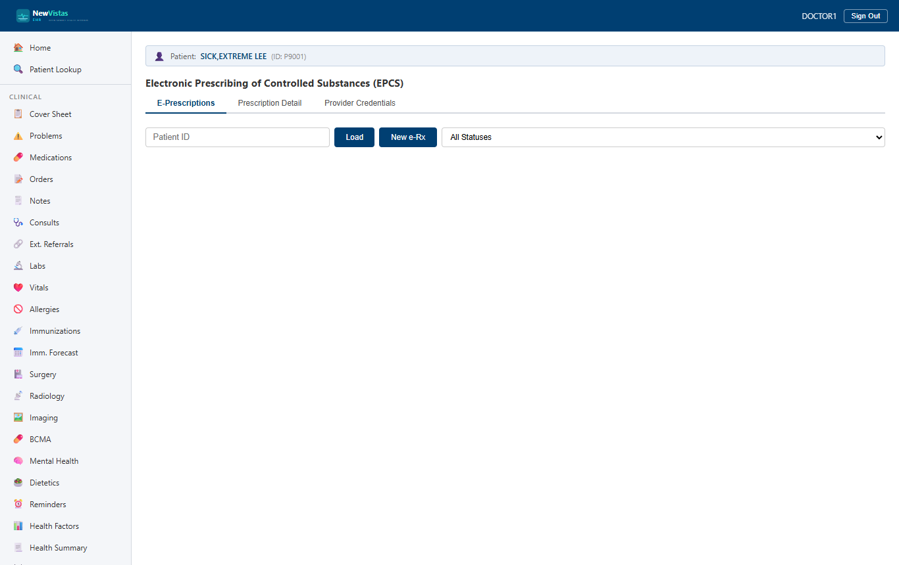
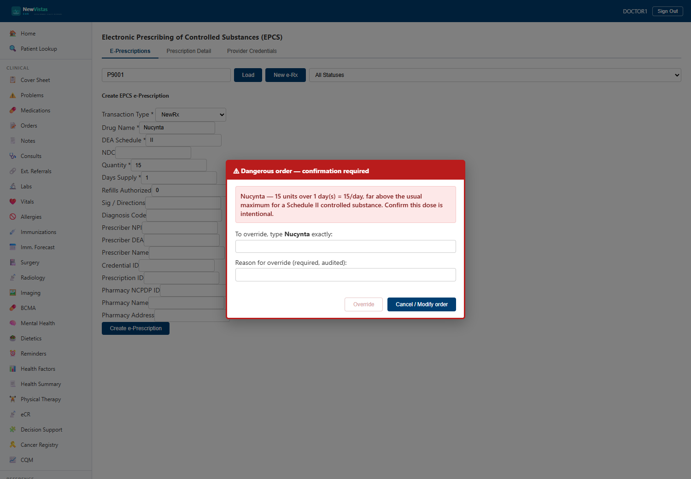
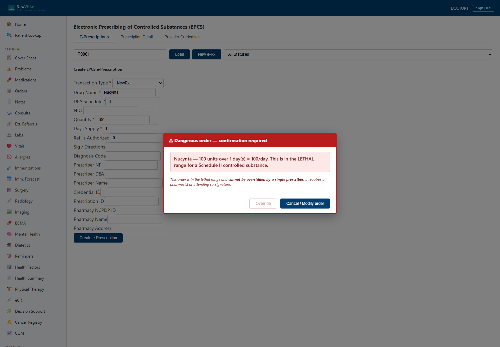

Prescribing & the Safety Gate
Writing outpatient prescriptions and choosing the patient's pharmacy, Electronic Prescribing of Controlled Substances (EPCS), and the patient-safety confirmation that stops a dangerous order before it's written.
Write an outpatient prescription
- Open Medications (or
/medications) for the patient. - Click + New Prescription.
- Enter the drug, sig, dosage, quantity, days supply and refills. The prescriber defaults to you.
- Confirm the Pharmacy: it defaults to the patient's preferred pharmacy — ask which pharmacy they'd like and click Change to search for a different one.
- Click Place Prescription. It's added to the active-med list and routed to the chosen pharmacy.
Write an e-Prescription
- In the sidebar, open EPCS (or go to
/epcs). - Enter the patient ID and click Load.
- Click New e-Rx to open the prescription form.
- Fill in the drug, DEA schedule, quantity, days supply, sig, and prescriber details.
- Click Create e-Prescription. For a normal order it's written immediately and appears in the list.

The controlled-substance safety gate
When an order's daily dose is dangerously high for its DEA schedule, the system will not let it through on a single click. Instead it raises a Tier-2 confirmation that is deliberately designed to defeat muscle-memory: the safe choice (Cancel) is the primary, right-most button, and the override is secondary, on the left, and disabled until you prove you read the warning.
High dose — type-to-confirm
For a high-but-survivable dose, you may override — but only after typing the drug name exactly and recording an audited reason.

Lethal dose — co-signature required
For an order in the lethal range (for example, 100 tablets per day of a Schedule II opioid), a single prescriber cannot override it at all. The Override button is disabled and the order requires a pharmacist or attending co-signature.

Thresholds
| DEA Schedule | Warn (type-to-confirm) | Lethal (co-sign) |
|---|---|---|
| Schedule II | over 12 / day | 24 / day or more |
| Schedule III–V | over 24 / day | 48 / day or more |
Daily dose = quantity ÷ days supply. The same gate guards dispensing at Pharmacy Point of Sale.